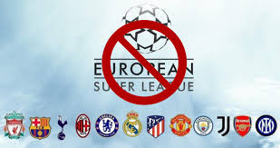

Equipos que participan esta temporada 2023\2024 en LaLiga.
Esta temporada participan: Real Madrid, Barcelona, Atlético de Madrid, Girona, Sevilla, Valencia, Celta de Vigo, Villareal, Almeria,
Granada, Cádiz, Mallorca, Real Sociedad, Athletic de Bilbao, Alavés, Las Palmas, Getafe, Rayo Vallecano, Osasuna
y Betis. Además el Real Madrid, FC Barcelona, Atlético de Madrid, Real Sociedad y Sevilla disputarán la Champions, el Bétis y el Villareal jugarán la Europa League y el Osasuna una fase de clasificación
a la Conference League.
Clasificación a día 22 de febrero de 2024.
Cuando acabe la temporada los cuatro primeros irán a la Champions League, el quinto irá a la Europa League
y el sexto tendrá acceso a una ronda de clasificación a la Conference League. Si el ganador de la Copa del Rey ya va a Champions o Europa League entonces el quinto y sexto irían a Europa League
y el séptimo a la ronda de clasificación de la Conference. Los tres últimos de la clasificación descenderán a la segunda división española de fútbol. La clasificación a día de hoy es:
- Real Madrid
- Girona
- Barcelona
- Atlético de Madrid
- Atheltic de Bilbao
- Real Sociedad
- Betis
- Valencia
- Las Palmas
- Getafe
- Osasuna
- Alaves
- Villareal
- Rayo Vallecano
- Sevilla
- Mallorca
- Celta de Vigo
- Cádiz
- Granada
- Almería
LaLiga frente a la Superliga.
La liga española presidida por Tebas ha mostrado su contundente rechazo ante el nuevo proyecto del presidente
del Real Madrid, Florentino Pérez, que busca crear unas ligas conjuntas entre equipos con gran influencia europea
y se repartirían las ganancias, no como en el sistema actual en el que se queda con gran parte del dinero los de arriba,
como la FIFA o la UEFA. La Real Federación Española de Fútbol(RFEF) en conjuto a LaLIga han dictaminado su negación a este
nuevo proyecto y han anunciado que sancionarán a los que lo apoyen, medida que también se han tomado en países como
Inglaterra y ha hecho que algunos equipos retiren públicamente su apoyo a esta nueva competición.
